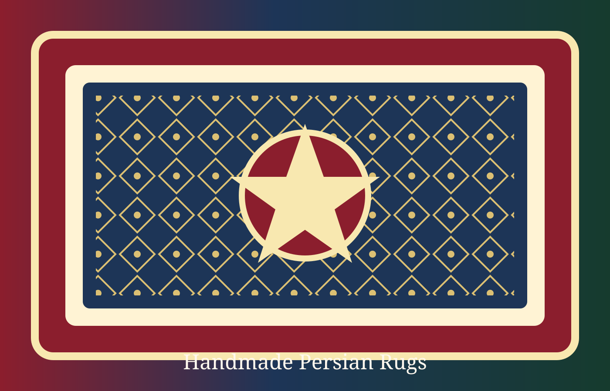

Bakhtiari
Bakhtiari rugs are among the most durable and distinctive Persian tribal carpets, celebrated for their bold geometric designs, excep...
View Collection →Discover timeless Persian rugs crafted with tradition, elegance, and soul. At Keshmiri Rugs, we bring you carefully selected handmade pieces that carry the beauty of Persian heritage into modern homes.

Our collections celebrate the rich weaving regions of Iran, from refined city carpets to expressive tribal rugs. Every collection page includes history, design features, materials, colors, and a direct WhatsApp inquiry button.
Choose a category to learn more about its heritage and contact us directly for available pieces.
Bakhtiari rugs are among the most durable and distinctive Persian tribal carpets, celebrated for their bold geometric designs, excep...
View Collection →Baluch rugs are among the most distinctive tribal carpets of the Persian world, admired for intricate geometric patterns, rich dark ...
View Collection →Quchan rugs are renowned for bold tribal aesthetics, exceptional wool quality, and strong Kurdish influence from northeastern Iran....
View Collection →Hamadan rugs are diverse and historically significant Persian village carpets, celebrated for durability, bold geometric designs, an...
View Collection →Kashan rugs are among the most iconic and prestigious Persian carpets, renowned for elegant floral designs, rich color palettes, and...
View Collection →Kerman rugs are artistic and refined Persian carpets, celebrated for intricate floral patterns, luxurious wool, and extraordinary cr...
View Collection →Lori rugs are authentic and expressive tribal carpets, handwoven by Luri tribes in western and southwestern Iran....
View Collection →Nahavand rugs are Persian village carpets known for durability, vibrant colors, and striking geometric patterns....
View Collection →Shiraz rugs are celebrated tribal carpets of southern Iran, admired for bold geometric designs, rich natural colors, and strong noma...
View Collection →Tabriz rugs are among the finest and most prestigious Persian carpets ever created, renowned for extraordinary craftsmanship and int...
View Collection →Sultanabad rugs are admired for grand scale patterns, elegant village character, and decorative Persian beauty suited to both classi...
View Collection →Turkmen rugs are recognizable tribal carpets admired for distinctive geometric motifs, rich red tones, and centuries-old weaving tra...
View Collection →Qom rugs are among the most luxurious and valuable Persian carpets, renowned for silk construction, breathtaking detail, and excepti...
View Collection →Tell us the size, style, color palette, and category you like. Our support team will guide you through available pieces.